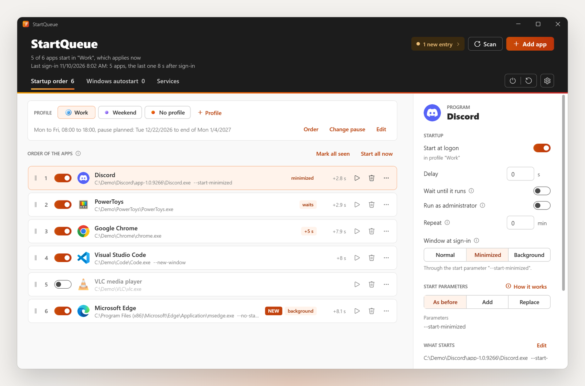
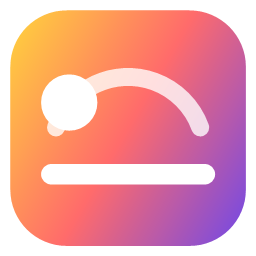

Was es kann
Eine Liste für alles, was startet
Jede App, die mit Windows startet, egal wo sie eingetragen wurde, in einer Reihenfolge. Zum Sortieren ziehen, eine Verzögerung einstellen oder warten, bis eine App wirklich läuft.
Startet früh und zeigt, wie lange es gedauert hat
Deine ersten Apps starten direkt nach der Anmeldung, und StartQueue zeigt, wann jede gestartet ist. Auf dem PC des Autors startet die erste App etwa 8 Sekunden nach der Anmeldung statt nach etwa 60.
Bereit, wenn du dich hinsetzt
Fahr mit vorbereiteten Apps herunter: Beim nächsten Start meldet Windows dich an und sperrt den Bildschirm, und deine Apps starten hinter dem Sperrbildschirm.
Profile für Arbeit und Wochenende
Wochentage, Uhrzeiten oder ganztägig, in einer Reihenfolge, die du ziehst. Plane eine Pause wie eine Abwesenheitsnotiz. Jedes Profil hat seine eigene Farbe.
Leise Starts
Normal, minimiert oder direkt in den Infobereich, für jede App einzeln. StartQueue kennt die Startparameter vieler Apps und lernt neue dazu.
Der Autostart bleibt sauber
Trägt sich eine App wieder selbst ein, merkt StartQueue das sofort und übernimmt sie, schaltet sie ab oder sagt dir nur Bescheid, ganz wie du willst.

Herunterladen
Für Windows 11, und auf Windows 10 läuft es mit ein paar fehlenden Details. Ohne Adminrechte verwaltet StartQueue deine eigenen Autostart-Einträge. Den vollen Umfang gibt es mit einer Installation mit Adminrechten.
Was Adminrechte braucht
| Ohne Adminrechte | Mit Adminrechten installiert | |
|---|---|---|
| Deine eigenen Autostart-Einträge | Übernommen | Übernommen |
| Einträge für alle Benutzer | Bleiben bei Windows | Übernommen |
| Apps als Administrator | Nicht verfügbar | Ohne UAC-Abfrage |
| Kontextmenü im Explorer | Unter „Weitere Optionen anzeigen“ | Im Menü von Windows 11 |
| Windows-Dienste | Mit UAC-Abfrage und Admin-Konto | Mit UAC-Abfrage |
| Vorbereitetes Herunterfahren | Ein Administrator richtet es einmal ein | Ein Klick in den Einstellungen |
Den Admin-Teil kannst du auch später in den Einstellungen einrichten. Die Deinstallation über die Windows-Einstellungen gibt jeden Eintrag an Windows zurück.
Das Setup ist noch nicht signiert. Windows SmartScreen warnt vielleicht vor einem unbekannten Herausgeber: Wähle „Weitere Informationen“, dann „Trotzdem ausführen“.
Fragen
Startet mein PC schneller?
Windows selbst fährt nicht schneller hoch. Deine Apps starten früher und in der Reihenfolge, die du wählst, und das Fenster zeigt, wann jede bei der letzten Anmeldung gestartet ist. Am meisten bringt das vorbereitete Herunterfahren: Deine Apps starten, bevor du dich hinsetzt.
Ist das vorbereitete Herunterfahren sicher?
Danach ist der PC angemeldet, aber gesperrt, wie nach Windows+L. Zum Entsperren brauchst du wie immer PIN, Kennwort oder Windows Hello. Messenger zeigen dich vielleicht schon als online, bevor du am PC sitzt.
Kann ich alles rückgängig machen?
Ja. Jeder Eintrag lässt sich einzeln an Windows zurückgeben, und die Deinstallation gibt alle zurück.

Mehr von EsteemWorks DynaTones Dein Desktop folgt der Sonne.